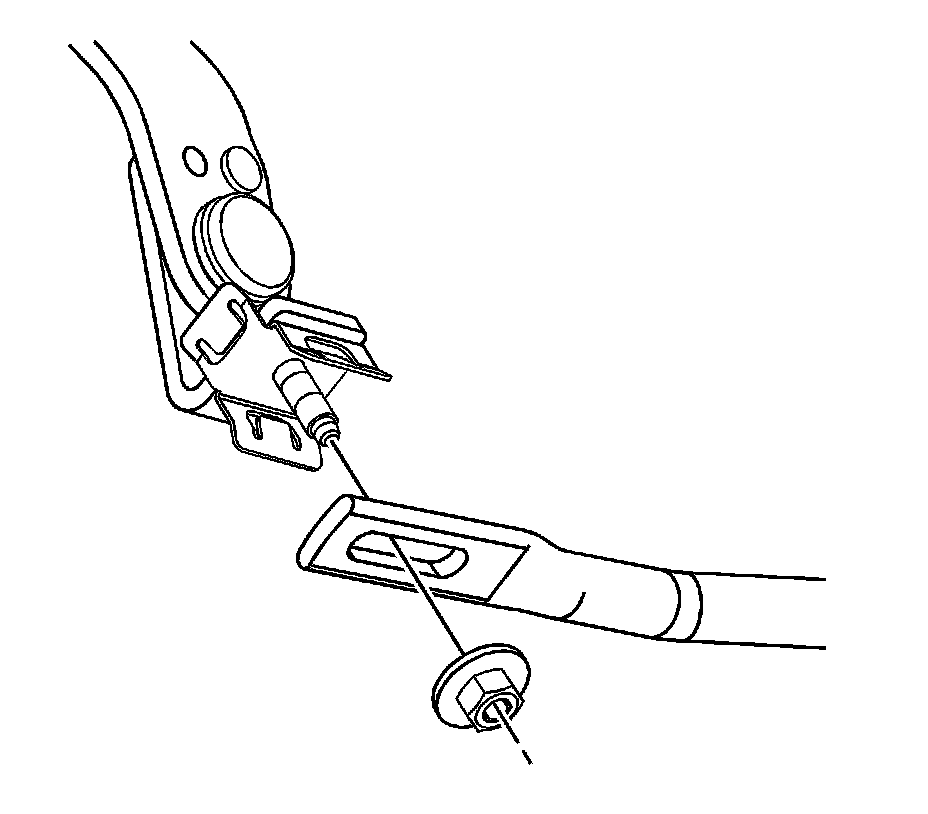
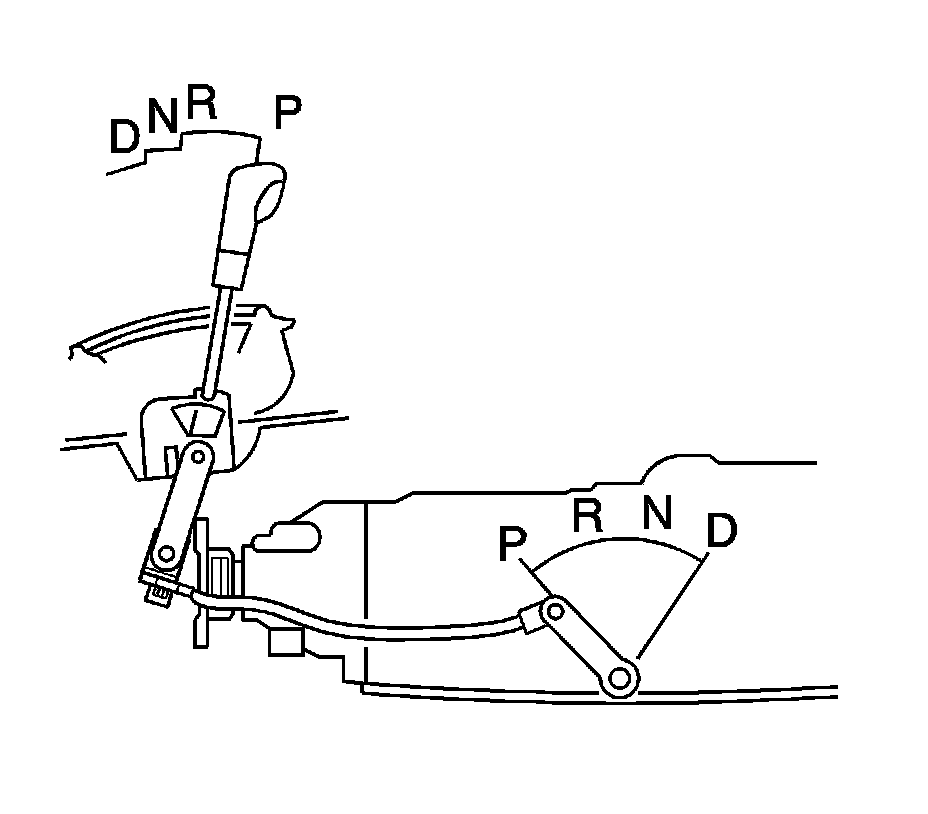

Shift Control Linkage Adjustment (Rear Wheel Drive)
Shift Control Linkage Adjustment (Rear Wheel Drive)
1. Position the shift lever in PARK.
2. Raise and support the vehicle. Refer to Lifting and Jacking the Vehicle (Service and Repair) .

3. Loosen the shift control linkage adjustment nut to allow the adjuster to slide freely.
Notice: Refer to Fastener Notice (Fastener Notice) .
4. Hold the selector lever on transmission against the rear stop to eliminate any play.
Tighten the shift control linkage adjustment nut to 9 N.m (80 lb in).
5. Lower the vehicle.

6. Inspect the operation of the starting system with the shift lever in each position. The engine should only crank when the lever is in the PARK or NEUTRAL position.
7. Ensure that the shifter detents align with the gear indicators.
8. Return to the PARK position and check for proper engagement. PARK position should feel solid and not spongy. The shift lever should not be bottomed out on the stop bumper when engaging the PARK position. Readjust and retest if necessary.
9. With the ignition on and the engine not running, ensure a smooth transition from position D to tap mode and back. Ensure that the odometer changes to the gear indicator mode. If the odometer does not change to gear indicator mode, or any binding or rough spots are felt, repeat the linkage adjustment procedure and retest the system.